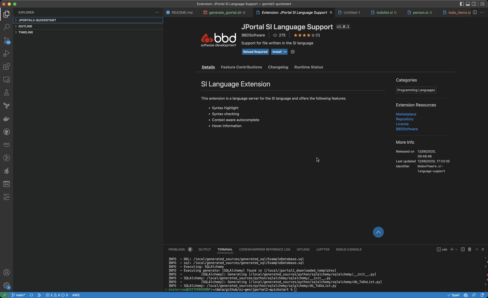

Installing the JPortal2 VSCode extension
Overview¶
The JPortal2 VS Code extension is available on from the VSCode extensions tab.
To install the JPortal extension, open VSCode, then choose the the Extensions tab on the left (Or press Ctrl-P and type "install extensions"). Type "JPortal" into the search field, choose the JPortal extension, and install it. See the video below:

It is on the todo list to have the VSCode plugin do a compile task, but for now, you can set up VSCode to compile your si, using a tasks.json file inside the .vscode directory in your project. Once set up, you can press Ctrl-Shift-B to run, or set it up with other keys.
Instructions on how to set up tasks in VSCode are here
Below is an example tasks.json file that will work for this demo:
1 2 3 4 5 6 7 8 9 10 11 12 13 14 15 16 17 18 19 20 21 22 23 | |